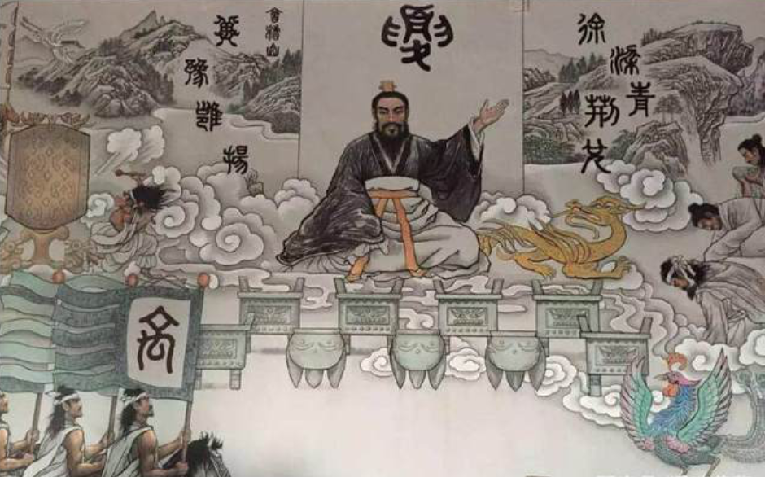

夏商始待茶以药，东西两周立茶道
茶最早开始有文字记载，是在商朝，为茶的原始利用期，在商周的时候中国饮茶主要以咀嚼鲜叶、煮成菜羹、熬煮茶水三种使用 方法，并在这个基础上初步发展出了一些饮茶的理论，直至现在，云南少数民族也保留着此传统。
夏商周时期，是中国茶的利用阶段，这一时期人类社会进入青铜器时代，粮食作物已是五谷具备了，蔬菜水果更是品类繁多，养 殖、捕捞业也颇为发达，饮食已经不仅仅是为了维护生命，同时也是一种享受，我国最先发现茶为药用植物，并且注意发挥他在 这方面的功用。《尚书·顾问》记载：“王三宿、三祭、三诧”“诧”即为茶。在商朝以前，视茶为珍物，用作祭祀。 解放前，桐柏地区还流传着用茶代酒敬祖宗祭祀的习俗，在商朝以后，即在公元1136年的周朝，茶叶就发展成为贡品，可见，桐 柏茶叶在周朝时已经形成小规模种植，并且在当时已经成为饮品。禹汤的发展，使桐柏人民对茶的认识也不断的深入，使用范围 也逐渐的扩大。虽然在历史上对于茶的发展方面，这段时期没有非常明确的记载，但实际上对于桐柏茶的发展也是重要的时期。
西周时期，这种饮食茶叶的习惯得到了继承和发展，茶叶的苦中有甜，苦后回甘，令人回味，广泛受到普通人和王公贵族的喜爱，因 此周朝就有了最早的人工栽培的茶园，此时，巴蜀地区茶叶生产已有一定规模，巴蜀地区多疫病，民众们以茶为生，认为只有吃茶才 能除瘴气，解热毒，只要一天不吃就会生病，也正是因为这些地域自然条件由此也决定了人们的饮食习惯。
关于周公首推茶的证据，也多半来于陆羽《茶经》的“闻于鲁周公”，东晋的《华阳国志·巴志》对茶事的记录，在距今3000多年前 周武王伐纣后，将一位宗亲封在了巴地，被称为巴王，那时候巴王上贡，茶叶就是其一，献给武王，茶就此发展成为贡品，那时候的 贡品是要经过官方认可的，巴王上贡的茶却又是珍品中的极品。
对此，陆羽《茶经》也明确说明茶在周朝已经开始煮鲜饮，当时烹调技艺日成熟，烹调理论初步形成，茶饮也经过一些改革。到达东 周时期，湖南长沙出土的距今2200年前文物中，用丝织的画轴上有仕女献茶的记录。茶的发现和利用，并非一开始就懂得泡制饮用， 而是经历了漫长的历史发展才在不断改进的过程中形成的，也就此证明茶最先的饮用方法是生煮羡饮，然后再步入晒干（收藏）煮饮。
最后，值得一提的是，中国原来考古发现年代最早的茶叶实物出土于西汉景帝杨陵，然而近日，山东大学考古团队正式公布山东济宁 邹城市邾国故城遗址西岗墓地一号战国墓随葬的原始瓷碗中，出土的茶叶样品为煮（泡）过的茶叶残渣，为目前已知世界最早茶叶遗 存，将世界茶文化起源的实物证据提前了至少300年，西岗M1茶叶遗存的发现与证实，为研究茶的早期起源于传播等问题提供了证实材料。